Chapter 4 Complete protocols
This chapter showcases several complete protocols for different kinds of data visualizations. Each protocol starts with the raw data and ends with a publication quality plot. The data is available from Github, just follow this link. In the same folder you can find the R markdown files for each protocol. To reproduce the data visualizations you can either take the data and follow the instructions in the chapter. Alternatively you can download the R markdown file (and the data) and run it step by step. The R markdown files can also be used as a starting point to apply the same visualization to your own data.
An overview of the data visualizations that are generated by the protocols:
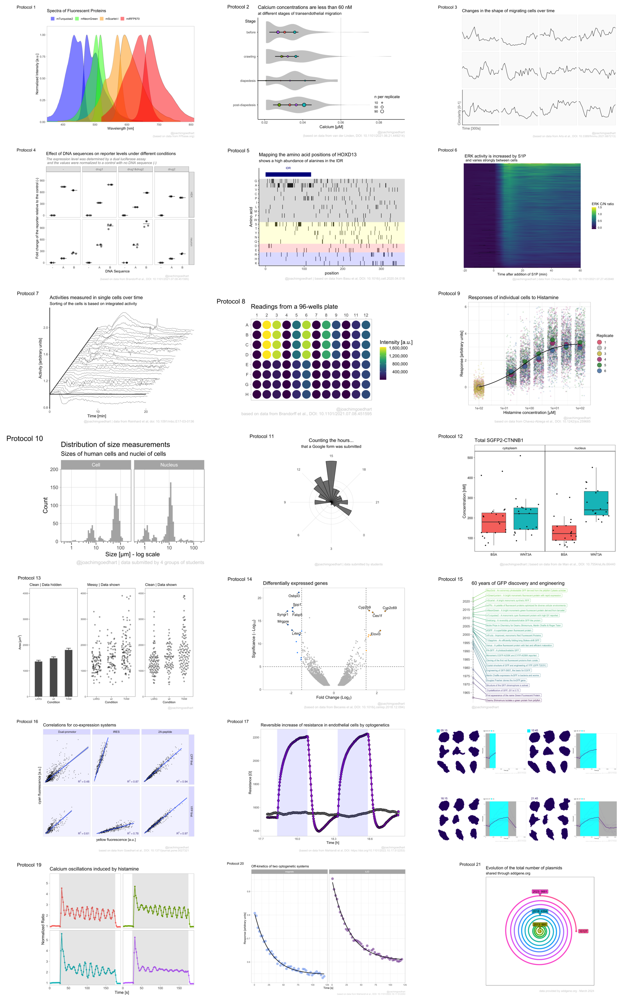
4.1 Protocol 1 - Spectra of fluorescent proteins
This protocol describes how you can turn a csv with spectral data that is obtained from FPbase.org into a plot of those spectra. First, we load the required package:
library(tidyverse)For this data visualization, I selected several spectra from fluorescent proteins at FPbase.org: https://www.fpbase.org/spectra/?s=1746,6551,101,102,123,124,1604,1606&showY=0&showX=1&showGrid=0&areaFill=1&logScale=0&scaleEC=0&scaleQY=0&shareTooltip=1&palette=wavelength
The data was downloaded in CSV format (by clicking on the button in the lower right corner of the webpage) and renamed to ‘FPbase_Spectra_4FPs.csv’.
We read the data from the CSV by using the read_csv() function. This function is part of the tidy verse and loads the data as a tibble. It also guesses type of data for each column. To hide that information, we use show_col_types = FALSE here.
df_raw <- read_csv("FPbase_Spectra_4FPs.csv", show_col_types = FALSE)Let’s briefly look at what we have loaded:
glimpse(df_raw)Rows: 512
Columns: 9
$ Wavelength <dbl> 300, 301, 302, 303, 304, 305, 306, 307, 308, 309, 310…
$ `mTurquoise2 EM` <dbl> NA, NA, NA, NA, NA, NA, NA, NA, NA, NA, NA, NA, NA, N…
$ `mTurquoise2 EX` <dbl> 0.2484, 0.2266, 0.2048, 0.1852, 0.1634, 0.1482, 0.132…
$ `mNeonGreen EM` <dbl> NA, NA, NA, NA, NA, NA, NA, NA, NA, NA, NA, NA, NA, N…
$ `mNeonGreen EX` <dbl> NA, NA, NA, NA, NA, NA, NA, NA, NA, NA, NA, NA, NA, N…
$ `mScarlet-I EM` <dbl> NA, NA, NA, NA, NA, NA, NA, NA, NA, NA, NA, NA, NA, N…
$ `mScarlet-I EX` <dbl> NA, NA, NA, NA, NA, NA, NA, NA, NA, NA, NA, NA, NA, N…
$ `miRFP670 EM` <dbl> NA, NA, NA, NA, NA, NA, NA, NA, NA, NA, NA, NA, NA, N…
$ `miRFP670 EX` <dbl> NA, NA, NA, NA, NA, NA, NA, NA, NA, NA, NA, NA, NA, N…The data needs conversion to a tidy format before plotting. Since we have a single continuous data column with Wavelength information that is used for the x-axis, it is excluded from the operation:
df_1 <-
pivot_longer(
df_raw,
cols = -Wavelength,
names_to = "Sample",
values_to = "Intensity"
)There are several rows that have NA values for Intensity and this is how to get rid of that:
df_1 <- df_1 %>% drop_na(Intensity)The column ‘Sample’ has labels for the fluorescent protein and the type of spectrum. We can separate that column into two different columns that we name ‘Fluorescent Protein’ and ‘Spectrum’:
df_1 <- df_1 %>%
separate(Sample, c("Fluorescent Protein", "Spectrum"), sep = " ")Let’s do a first attempt and plot the data:
ggplot(
data = df_1,
aes(x = Wavelength, y = Intensity, color = `Fluorescent Protein`)
) +
geom_line(aes(linetype = Spectrum), size = 1)
This looks pretty good already. Now let’s change the order of the fluorescent proteins to their order in the plot:
df_1 <- df_1 %>%
mutate(`Fluorescent Protein` = forcats::fct_relevel(
`Fluorescent Protein`,
c("mTurquoise2", "mNeonGreen", "mScarlet-I", "miRFP670")
))The data is in the right shape now, so let’s save it:
df_1 %>% write.csv("protocol_1.csv", row.names=FALSE)We define the plot object and add an extra geometry, geom_area() to fill the area under the curves:
p <-
ggplot(
data = df_1,
aes(
x = Wavelength, y = Intensity,
fill = `Fluorescent Protein`
)
) +
geom_line(aes(linetype = Spectrum),
size = 0.5, alpha = 0.5
) +
geom_area(
aes(linetype = Spectrum),
color = NA,
position = "identity",
size = 1,
alpha = 0.5
)Let’s check the result:
p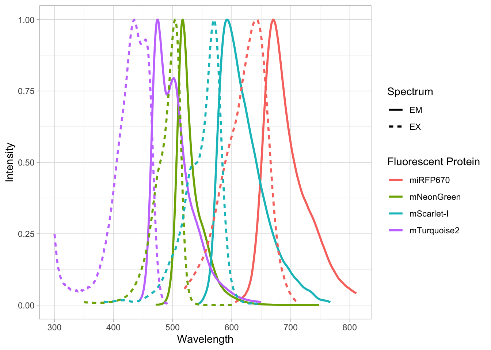
Next, we set the limits of the axis and force the y-axis to start at 0
p <-
p + scale_y_continuous(expand = c(0, 0), limits = c(0, 1.1)) +
scale_x_continuous(expand = c(0,0), limits = c(350, 810))Add labels:
p <-
p + labs(
title = "Spectra of Fluorescent Proteins",
x = "Wavelength [nm]",
y = "Normalized Intensity [a.u.]",
caption = "@joachimgoedhart\n(based on data from FPbase.org)",
tag = "Protocol 1"
)Modify the layout by adjusting the theme. Comments are used to explain effect of the individual lines of code:
p <-
#Set text size
p + theme_light(base_size = 14) + theme(
plot.caption = element_text(
color = "grey80",
hjust = 1
),
#Remove grid
panel.grid.major = element_blank(),
panel.grid.minor = element_blank(),
#Set position of legend
legend.position = "top",
legend.justification = "left"
#Define the legend layout
) + guides(
linetype = "none",
fill = guide_legend(title = NULL, label.position = "right")
)p
We are almost there, except that the colors of the plot do not match with the natural colors of the fluorescent proteins. Let’s fix that by defining a custom color palette. The order of the colors matches with the order of the fluorescent proteins that was defined earlier:
custom_colors <- c("blue", "green", "orange", "red")To apply the custom colors to the filled area:
p <- p + scale_fill_manual(values = custom_colors)This is the result:
pTo save this plot as a PNG file:
png(file=paste0("Protocol_01.png"), width = 4000, height = 3000, units = "px", res = 400)
p
dev.off()quartz_off_screen
2 4.2 Protocol 2 - A superplot of calcium concentrations
This protocol is used to create a superplot which differentiates between technical and biological replicates. The concept of superplots has been reported by Lord and colleagues (Lord et al., 2021). We will use the data that was used to create figure 5e in a publication by van der Linden et al. (2021).
The figure in the publication summarizes the data from all experiments and does not identify the biological replicates. Below, we will differentiate the biological replicates, by treating each batch of neutrophils as a biological replicate.
We start by loading the required tidyverse package:
library(tidyverse)We define the confidence level as 95%:
Confidence_level <- 0.95The data is stored in an excel sheet and we read it, skipping the first 6 lines which contain comments:
df_raw <- readxl::read_excel('figure5.xlsx', skip=6)Let’s look at the data:
head(df_raw)# A tibble: 6 × 7
`Experimental day` `Replicate no.` `Neutrophil no.` `Batch no. neutrop…` Stage
<dbl> <dbl> <dbl> <dbl> <chr>
1 1 1 1 1 befo…
2 1 1 1 1 befo…
3 1 1 1 1 befo…
4 1 1 1 1 befo…
5 1 1 1 1 befo…
6 1 1 1 1 befo…
# … with 2 more variables: `dF/F0` <chr>, `Calcium (uM)` <dbl>The data is already in a tidy format. The column with ‘Stage’ has the four different conditions for which we will compare the data in the column ‘Calcium (uM)’. We change the name of the column ‘Batch no. neutrophils’ to ‘Replicate’ and make sure the different replicates are treated as factors (qualitative data):
df_raw <- df_raw %>% mutate(Replicate = as.factor(`Batch no. neutrophils`))Let’s look at the data, and identify the biological replicates, as suggested in the original publication on Superplot by (Lord et al., 2021). In this example a color code is used to label the replicates:
ggplot(data=df_raw, aes(x=Stage)) +
geom_jitter(data=df_raw, aes(x=Stage, y=`Calcium (uM)`, color=Replicate))To display the statistics for the individual biological replicates, we define a new dataframe. To this end, we group the data for the different stages and biological replicates:
df_summary <- df_raw %>% group_by(Stage, Replicate) %>%
summarise(n=n(), mean=mean(`Calcium (uM)`))`summarise()` has grouped output by 'Stage'. You can override using the
`.groups` argument.Next, we use ‘df_summary’ which holds the averages of each biological replicate, and we calculate the statistics for the different conditions:
df_summary_replicas <- df_summary %>% group_by(Stage) %>%
mutate(n_rep=n(), mean_rep=mean(mean), sd_rep = sd(mean)) %>%
mutate(sem = sd_rep / sqrt(n_rep - 1),
`95%CI_lo` = mean_rep + qt((1-Confidence_level)/2, n_rep - 1) * sem,
`95%CI_hi` = mean_rep - qt((1-Confidence_level)/2, n_rep - 1) * sem,
NULL)The dataframe has the summary of the conditions and note that each condition has a summary of 4 biological replicates:
head(df_summary_replicas)# A tibble: 6 × 10
# Groups: Stage [2]
Stage Replicate n mean n_rep mean_rep sd_rep sem `95%CI_lo`
<chr> <fct> <int> <dbl> <int> <dbl> <dbl> <dbl> <dbl>
1 before 1 38 0.0305 4 0.0301 0.00414 0.00239 0.0225
2 before 2 67 0.0270 4 0.0301 0.00414 0.00239 0.0225
3 before 3 56 0.0358 4 0.0301 0.00414 0.00239 0.0225
4 before 4 55 0.0270 4 0.0301 0.00414 0.00239 0.0225
5 crawling 1 7 0.0296 4 0.0317 0.00339 0.00196 0.0255
6 crawling 2 29 0.0289 4 0.0317 0.00339 0.00196 0.0255
# … with 1 more variable: `95%CI_hi` <dbl>We can now add or ‘bind’ the data of ‘df_summary_replicas’ to the original dataframe ‘df’ and store this as a dataframe ‘df_2’:
df_2 <- df_raw %>% left_join(df_summary_replicas, by = c("Stage","Replicate"))Let’s save this data:
df_2 %>% write.csv("protocol_2.csv", row.names=FALSE)Let’s first define a basic plot with all of the data for each stage shown as a violinplot:
p <- ggplot(data=df_2, aes(x=Stage)) +
geom_violin(data=df_2, aes(x=Stage, y=`Calcium (uM)`), color=NA, fill="grey80")This is what it looks like:
pWe add the 95% confidence interval from the summary of the biological replicates as a line:
p <- p + geom_linerange(data = df_2, aes(ymin=`95%CI_lo`, ymax=`95%CI_hi`), size=1, alpha=0.8) And we add the mean value of each replicate as a dot. Here, the size of the dot is reflecting n:
p <- p + geom_point(data=df_2, aes(x=Stage, y=mean, size=n, fill=Replicate), shape=21, stroke = 1)The function scale_size_area() ensures that 0 is represented as an area of 0 and allows to to define that an n of 10,50 and 90 is shown in the legend:
p <- p + scale_size_area(breaks = c(10, 50, 90), max_size = 6)This is what that looks like:
p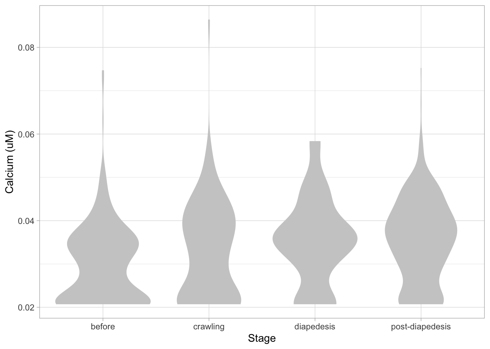
Next, one of my favorite tweaks for discrete conditions is to rotate the plot 90 degrees. At the same time, the limits are defined.
p <- p + coord_flip(ylim = c(0.02,0.09)) +
# This ensures correct order of conditions when plot is rotated 90 degrees
scale_x_discrete(limits = rev)Rotation improves readability of the labels for the conditions, even when they are long. It also easier to read the different calcium levels:
p
To guide the interpretation, a line is added as a threshold of 0.06 µM (=60 nM):
p <- p + geom_hline(yintercept = 0.060, linetype='dotted')Adjusting the axis labels and adding a title and caption:
p <-
p + labs(
title = "Calcium concentrations are less than 60 nM",
subtitle = "at different stages of transendothelial migration",
x = "Stage",
y = "Calcium [µM]",
caption = "@joachimgoedhart\n(based on data from van der Linden, DOI: 10.1101/2021.06.21.449214)",
tag = "Protocol 2"
)The layout it further optimized. The most tricky part is positioning of the label for the different conditions. It is placed right above the conditions, which I really like. However, getting this right involves a bit of trial and error and I recommend playing with the parameters to see how it affects the positioning. Something similar applies to the legend which is moved into the lower right corner of the plot, although this is eassier to accomplish. The comments explain the effect of the different lines:
p <-
#Set text size
p + theme_classic(base_size = 16) + theme(
plot.caption = element_text(
color = "grey80",
hjust = 1
),
#Set position of legend to lower right corner
legend.position = c(0.88,0.15),
#This line positions the label ('title') of the conditions
axis.title.y = element_text(vjust = 0.98, angle = 0, margin=margin(l=70)),
#This line positions the names of the conditions
#A negative margin is needed for aligning the y-axis 'title' with the 'text'
axis.text.y = element_text(vjust = 0.5, hjust=1, angle = 0, margin=margin(l=-90, r=5)),
#Move 'tag', so its position partially overlaps with the conditions
plot.tag.position = c(0.06,0.99)
) + guides(fill = "none",
size = guide_legend(title = 'n per replicate', label.position = "left")
)p
To save the plot as a PNG file:
png(file=paste0("Protocol_02.png"), width = 4000, height = 3000, units = "px", res = 400)
p
dev.off()quartz_off_screen
2 4.3 Protocol 3 - small multiples of time courses
This protocol displays a number of different timecourses as ‘small multiples’. Small multiples, as the name suggests, displays many small plot separately as a stamp collection. By stressing the data, rather than the labels and grids, this can be a powerful visualization strategy.
The data is taken from a publication by Arts et al. (2021) and we recreate figure panel 1F. The original figure is in small multiple format, but we tweak it a bit more to increase the focus on the data.
Let’s first load the necessary package:
library(tidyverse)The data comes from an excel file:
df_raw <- readxl::read_excel("Data_Arts_Circularity.xlsx")
head(df_raw)# A tibble: 6 × 13
time `neutro 1` `neutro 2` `neutro 3` `neutro 4` `neutro 5` `neutro 6`
<dbl> <dbl> <dbl> <dbl> <dbl> <dbl> <dbl>
1 0 0.53 0.54 0.55 0.59 0.58 0.34
2 10 0.44 0.6 0.5 0.4 0.54 0.4
3 20 0.33 0.55 0.64 0.3 0.48 0.41
4 30 0.35 0.54 0.69 0.28 0.52 0.32
5 40 0.41 0.53 0.57 0.23 0.44 0.29
6 50 0.32 0.4 0.4 0.26 0.43 0.25
# … with 6 more variables: `neutro 7` <dbl>, `neutro 8` <dbl>,
# `neutro 9` <dbl>, `neutro 10` <dbl>, `neutro 11` <dbl>, `neutro 12` <dbl>It is in a wide format, so we need to make it tidy. The parameter that was measured over time is the ‘roundness’ of cells:
df_3 <-
pivot_longer(
df_raw,
cols = -time,
names_to = "Cell",
values_to = "Roundness"
)The data is in the right shape now, so let’s save it:
df_3 %>% write.csv("protocol_3.csv", row.names = FALSE)First we create a line plot of all the data:
p <- ggplot(df_3, aes(x=time, y=Roundness, group=Cell)) + geom_line()
p
With the facet_wrap() function, we turn this into a small multiple:
p <- p + facet_wrap(~Cell)
p
Set the limits of the axis and force the y-axis to start at 0
p <-
p + scale_y_continuous(expand = c(0, 0), limits = c(0, 1.0)) +
scale_x_continuous(expand = c(0,0), limits = c(0, 300))Use a minimal theme and remove the strips and grid to increase focus on the data:
p <- p + theme_minimal(base_size = 14)
p <- p + theme(strip.background = element_blank(),
strip.text = element_blank(),
plot.caption = element_text(color = "grey80"),
#Remove grid
panel.grid.major = element_blank(),
panel.grid.minor = element_blank()
)
p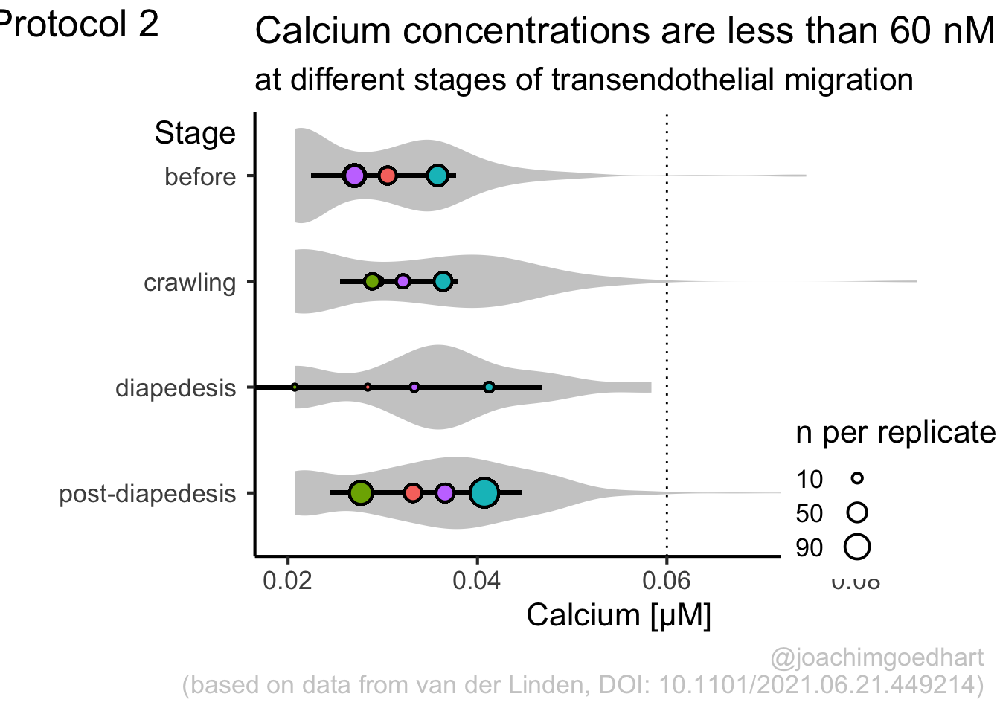
I do not like the repeated axis for the different plots. We can remove those:
p <- p + theme(
#Remove axis labels
axis.text = element_blank()
)
p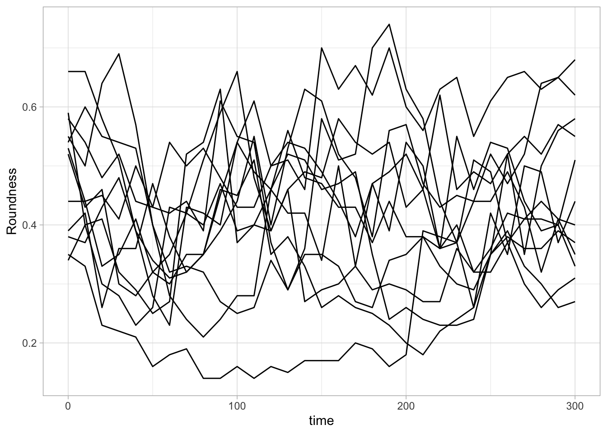
This is a very minimal plot, focusing entirely on the data. It may work well, but it is informative to add some information about the scaling of the x- and y-axis. To achieve this, I add lines to the lower left plot, which correspond to the data of ‘neutro 6’ (you can see this in the small multiple plot where each plot was labeled). I define a new dataframe with the x- and y-scale for ‘neutro 6’ to do just that:
ann_line<-data.frame(xmin=0,xmax=300,ymin=0,ymax=1,
Cell=factor("neutro 6",levels=c("neutro 6")))
ann_line xmin xmax ymin ymax Cell
1 0 300 0 1 neutro 6This dataframe can now be used to draw two lines with geom_segment():
p <- p +
#Vertical line
geom_segment(data=ann_line, aes(x=xmin,xend=xmin,y=ymin,yend=ymax), size=2, color='grey40') +
#Horizontal line
geom_segment(data=ann_line, aes(x=xmin,xend=xmax,y=ymin,yend=ymin), size=2, color='grey40') +
NULL
p
The plot is now in black and white which gives it a strong contrast. We can make it a bit more soft and pleasant to look at by changing to shades of grey. Also, the labels of the axes are moved next to the lines:
p <- p +
theme(panel.background = element_rect(fill='grey98', color=NA),
panel.border = element_rect(color='grey90', fill=NA),
axis.title.x = element_text(size=14, hjust = 0, color='grey40'),
axis.title.y = element_text(size=14, vjust = 0, hjust=0, angle = 90, color='grey40'),
) Finally, we add a title, caption, and labels (and a scale in brackets):
p <-
p + labs(
title = "Changes in the shape of migrating cells over time",
x = "Time [300s]",
y = "Circularity [0-1]",
caption = "@joachimgoedhart\n(based on data from Arts et al., DOI: 10.3389/fimmu.2021.667213)",
tag = "Protocol 3"
) p
png(file=paste0("Protocol_03.png"), width = 4000, height = 3000, units = "px", res = 400)
p
dev.off()quartz_off_screen
2 4.4 Protocol 4 - Plotting data from a 96-wells experiment
This protocol showcases some serious data wrangling and tidying. One reason is that the data is acquired with a 96-wells plate reader and the data is stored according to the layout of the plate. This makes total sense from a human perspective, but it is not well suited for data visualization.
In addition, the plate is measured twice. One measurement is the luminescence from a luciferase and the other measurement is the luminescence from Renilla. The latter reading serves as a reference and therefore, the luciferase data is divided by the Renilla intensities. A final step before the data is visualized is a normalization to a control condition.
The code that is shown here is also the basis for the plotXpress app that can be used to process and visualize the data. In fact, the data visualization is very close to the standard output of plotXpress and uses the same example data.
We start by loading a package that we need:
library(tidyverse)The measured data is read from an excel sheet. Note that this is the raw data that is stored by the software that operates the plate reader:
df_raw <- readxl::read_excel("DualLuc_example_data.xlsx", sheet = "Results")New names:
• `` -> `...1`
• `` -> `...2`
• `` -> `...3`
• `` -> `...5`
• `` -> `...6`
• `` -> `...7`
• `` -> `...8`
• `` -> `...9`
• `` -> `...10`
• `` -> `...11`
• `` -> `...12`
• `` -> `...13`
• `` -> `...14`
• `` -> `...15`
• `` -> `...16`
• `` -> `...17`The experimental conditions for each well are stored in a separate CSV file, generated by the experimentalist that did the experiment:
df_design <- read.csv("Tidy_design.csv")
head(df_design) Wells condition treatment1 treatment2
1 A01 - HEK -
2 B01 - HEK -
3 C01 - HEK -
4 D01 - HEK -
5 E01 - neuron -
6 F01 - neuron -You can see that the design file is tidy. In contrast the excel file with data is far from tidy. In the excel sheet, two ‘rectangles’ of cells define the data for the firefly & renilla reads. The data is subset and converted to a vector
firefly <- df_raw[19:26,6:17] %>% unlist(use.names = FALSE)
renilla <- df_raw[40:47,6:17] %>% unlist(use.names = FALSE)Define a dataframe with wells
column <- rep(1:12, each=8)
row <- rep(LETTERS[1:8],12)For convenience, all numbers should consist of 2 digits and so we add a zero that precedes the single digit numbers:
x0 <- str_pad(column, 2, pad = "0")To generate a unique index for each row in the dataframe, we define ‘Wells’, which combines the row and column index:
Wells <- paste0(row,x0)Next, we create a dataframe that holds the data of individual columns, rows and wells:
df_plate <- data.frame(column,row,Wells)
head(df_plate) column row Wells
1 1 A A01
2 1 B B01
3 1 C C01
4 1 D D01
5 1 E E01
6 1 F F01Add to df_plate the vectors with data from firefly and renilla reads
df_4 <- data.frame(df_plate,firefly,renilla)Merge the design with the data, based on the well ID - left_join() is used to add only data for wells that are listed in the design dataframe
df_4 <- left_join(df_design, df_4, by='Wells')
head(df_4) Wells condition treatment1 treatment2 column row firefly renilla
1 A01 - HEK - 1 A 2010 2391540
2 B01 - HEK - 1 B 3210 2391639
3 C01 - HEK - 1 C 1965 2390991
4 D01 - HEK - 1 D 2381 2391774
5 E01 - neuron - 1 E 1292 269021
6 F01 - neuron - 1 F 991 268918Calculate the relative expression from the firefly/renilla ratio
df_4 <- df_4 %>% mutate(expression=firefly/renilla)Take all control conditions and calculate the average value
df_norm <- df_4 %>% filter(condition == "-") %>%
group_by(treatment1,treatment2) %>%
summarise(mean=mean(expression)) `summarise()` has grouped output by 'treatment1'. You can override using the
`.groups` argument.Combine the mean values (needed for normalization) values with the df_4 dataframe
df_4 <- df_4 %>%
full_join(df_norm, by=c("treatment1","treatment2")) %>%
na.omit(condition)Calculate the Fold Change by normalizing all measurements against the control (-)
df_4 <- df_4 %>% mutate(`Fold Change` = expression/mean)The result is a dataframe that holds all the necessary data:
head(df_4) Wells condition treatment1 treatment2 column row firefly renilla expression
1 A01 - HEK - 1 A 2010 2391540 0.0008404626
2 B01 - HEK - 1 B 3210 2391639 0.0013421758
3 C01 - HEK - 1 C 1965 2390991 0.0008218350
4 D01 - HEK - 1 D 2381 2391774 0.0009954954
5 E01 - neuron - 1 E 1292 269021 0.0048025991
6 F01 - neuron - 1 F 991 268918 0.0036851382
mean Fold Change
1 0.0009999922 0.8404692
2 0.0009999922 1.3421863
3 0.0009999922 0.8218414
4 0.0009999922 0.9955032
5 0.0040858977 1.1754085
6 0.0040858977 0.9019164The data is in the right shape now, so let’s save it:
df_4 %>% write.csv("protocol_4.csv", row.names = FALSE)Based on the dataframe, we can create a plot with jittered dots that show the data:
p <- ggplot(df_4, aes(x=condition, y=`Fold Change`)) +
geom_jitter(width = 0.2, alpha=0.5, size=3)To splot the graphs based on treatment1 (vertical) and treatment2 (horizontal) we use the facet_grid() function:
p <- p + facet_grid(treatment1~treatment2)We add a horizontal line for mean value:
p <- p + stat_summary(fun.min=mean, fun.max=mean, geom='errorbar', width=0.6, size=0.5)Add labels:
p <-
p + labs(
title = "Effect of DNA sequences on reporter levels under different conditions",
subtitle = "The expression level was determined by a dual luciferase assay\n and the values were normalized to a control with no DNA sequence (-)",
x = "DNA Sequence",
y = "Fold change of the reporter relative to the control (-)",
caption = "@joachimgoedhart\n(based on data from Brandorff et al., DOI: 10.1101/2021.07.08.451595)",
tag = "Protocol 4"
) Set the theme and font size:
p <- p + theme_light(base_size = 14)Format the facet labels (strips) and the caption + subtitle
p <- p + theme(strip.background = element_rect(fill="grey90", color="grey50"),
strip.text = element_text(color="grey50"),
plot.caption = element_text(color = "grey80"),
plot.subtitle = element_text(color = "grey50", face = "italic"),
#Remove the grid
panel.grid.major = element_blank(),
panel.grid.minor = element_blank()
)Let’s look at the result:
p
To save the plot as a png file:
png(file=paste0("Protocol_04.png"), width = 4000, height = 3000, units = "px", res = 400)
p
dev.off()quartz_off_screen
2 4.5 Protocol 5 - A map of amino acids
This data visualization plots the position of amino acids in a given protein. It is inspired by figure 2A of the paper by Basu et al. (2020)
Let’s load the tidyverse package:
library(tidyverse)First, we define a vector with the 20 amino acids and the order in which we plot them. The amino acids are grouped as hydrophobic (G,A,V,C,P,I,L,M,F,W), hydrophilic (S,T,Y,N,Q), acidic (D,E) and basic (R,H,K).
amino_acid_ordered <- strsplit("GAVCPILMFWSTYNQDERHK","") %>% unlist()
amino_acid_ordered [1] "G" "A" "V" "C" "P" "I" "L" "M" "F" "W" "S" "T" "Y" "N" "Q" "D" "E" "R" "H"
[20] "K"The protein sequence that we will use is the Homo sapiens Homeobox protein Hox-D13:
protein <- c("MSRAGSWDMDGLRADGGGAGGAPASSSSSSVAAAAASGQCRGFLSAPVFAGTHSGRAAAA
AAAAAAAAAAASGFAYPGTSERTGSSSSSSSSAVVAARPEAPPAKECPAPTPAAAAAAPP
SAPALGYGYHFGNGYYSCRMSHGVGLQQNALKSSPHASLGGFPVEKYMDVSGLASSSVPA
NEVPARAKEVSFYQGYTSPYQHVPGYIDMVSTFGSGEPRHEAYISMEGYQSWTLANGWNS
QVYCTKDQPQGSHFWKSSFPGDVALNQPDMCVYRRGRKKRVPYTKLQLKELENEYAINKF
INKDKRRRISAATNLSERQVTIWFQNRRVKDKKIVSKLKDTVS")The protein sequence may contain end-of-line characters “” after copy pasting and we need to remove these. The gsub() function can be used:
gsub("\n", "", protein)[1] "MSRAGSWDMDGLRADGGGAGGAPASSSSSSVAAAAASGQCRGFLSAPVFAGTHSGRAAAAAAAAAAAAAAASGFAYPGTSERTGSSSSSSSSAVVAARPEAPPAKECPAPTPAAAAAAPPSAPALGYGYHFGNGYYSCRMSHGVGLQQNALKSSPHASLGGFPVEKYMDVSGLASSSVPANEVPARAKEVSFYQGYTSPYQHVPGYIDMVSTFGSGEPRHEAYISMEGYQSWTLANGWNSQVYCTKDQPQGSHFWKSSFPGDVALNQPDMCVYRRGRKKRVPYTKLQLKELENEYAINKFINKDKRRRISAATNLSERQVTIWFQNRRVKDKKIVSKLKDTVS"But we can also use str_replace_all() from the {tidyverse} package:
protein <- protein %>% str_replace_all("\n", "")Next, the protein sequence is split into single characters and we assign this vector to aa:
aa <- strsplit(protein, "") %>% unlist()We generate a dataframe with a column with the amino acids and a column that defines their position:
df_5 <- data.frame(aa=aa, position=1:length(aa))Now we reorder the data frame to the order of the amino acids that we defined earlier in the vector amino_acid_ordered:
df_5 <- df_5 %>% mutate(aa = fct_relevel(aa, amino_acid_ordered))The basic plot shows a black tile for each amino acid. Note that the y-axis order is defined by the vector amino_acid_ordered, but it needs to be reverted to order the amino acids from top to bottom along the y-axis (which is naturally starts at the bottom it corresponds to the origin).
The data is in the right shape now, so let’s save it:
df_5 %>% write.csv("protocol_5.csv", row.names = FALSE)p <- ggplot() + geom_tile(data=df_5, aes(x=position, y=aa)) +
scale_y_discrete(limits = rev(amino_acid_ordered))
p
Set the theme to classic, to get rid off the ‘frame’ around the plot and the grid.
p <- p+theme_classic(base_size = 16)For each of the four classes of amino acids we can define a box with a color that indicates the class. For example, there are three basic residues that will have a rectangle filled with blue in the background. The amino acids are factors, but we need numbers to define the coordinates for the rectangle. In a plot with a factors (here on the y-axis) their position is defined by a (non visible) natural number. Therefore we can define a box with the function annotate() for the first residue with y-coordinates ymin=0.5 and ymax=1.5:
p + annotate(geom = "rect", xmin = -Inf, ymin = 0.5, xmax = Inf, ymax=1.5, fill='blue', alpha=0.4)In this way, we define four colored rectangles that reflect the different amino acids categories; blue=basic, red=acidic, yellow=hydrophilic, grey=hydrophobic:
p <- p + annotate(geom = "rect", xmin = -Inf, ymin = 0.5, xmax = Inf, ymax=3.5, fill='blue', alpha=0.15)
p <- p + annotate(geom = "rect", xmin = -Inf, ymin = 3.5, xmax = Inf, ymax=5.5, fill='red', alpha=0.15)
p <- p + annotate(geom = "rect", xmin = -Inf, ymin = 5.5, xmax = Inf, ymax=10.5, fill='yellow', alpha=0.15)
p <- p + annotate(geom = "rect", xmin = -Inf, ymin = 10.5, xmax = Inf, ymax=20.5, fill='black', alpha=0.15)Let’s look at the result:
p
Adjusting the axis labels and adding a title and caption:
p <-
p + labs(
title = "Mapping the amino acid positions of HOXD13",
subtitle = "shows a high abundance of alanines in the IDR",
y = "Amino acid",
caption = "@joachimgoedhart | based on data from Basu et al, DOI: 10.1016/j.cell.2020.04.018",
tag = "Protocol 5"
)And a final tweak of the label style and location:
p <- p + theme(
plot.caption = element_text(
color = "grey80",
hjust = 1
))In the original paper, a region of the protein is annotated as an ‘intrinsically disordered region’ abbreviated as IDR. Here, we we use the annotate() function to add a rectangle and a label to the top of the plot:
p <- p + annotate("rect", xmin=0, xmax=118, ymin=21, ymax=22, fill='darkblue') +
annotate("text", x=59, y=23, alpha=1, color='darkblue', size=4,label='IDR')
p
To avoid clipping of the new label by the subtitle of the plot:
p <- p + coord_cartesian(clip = 'off')
p
The subtitle is quite close to the IDR label. Let’s give the subtitle a bit more room, by adding a margin at the bottom of the subtitle. This can be done with the theme() function to style the subtitle:
p <- p + theme(plot.subtitle = element_text(margin = margin(b=20)))
pFinally we can save the plot:
png(file=paste0("Protocol_05.png"), width = 4000, height = 3000, units = "px", res = 400)
p
dev.off()quartz_off_screen
2 4.6 Protocol 6 - Heatmap style visualization of timelapse data
Lineplots are typically used to plot data from timeseries (also known as longitudinal data). However, in case of many samples/objects, this may result in a cluttered data visualization. To solve this, the same data can be presented as a heatmap, where every row is an object and the response is coded as a color. A downside is that it is less quantitative as it is difficult to ‘read’ the numbers from this kind of visualization. Still, it is a powerful visualization to plot a lot of data and show its dynamics and heterogeneity. The data and visualization is originally published by Chavez-Abiega et al. (2021)
The multipurpose {tidyverse} package is used for data wrangling and plotting:
library(tidyverse)A CSV file with the data is loaded. Since the file is a couple of Megabytes, we use the faster fread() function from the package data.table:
library(data.table)
Attaching package: 'data.table'The following objects are masked from 'package:dplyr':
between, first, lastThe following object is masked from 'package:purrr':
transposedf_S1P <- data.table::fread("ERK_repsonse_to_S1P.csv")
head(df_S1P) Time_in_min Ligand Unique_Object CN_ERK Slide
1: 2.5 S1P 100 0.3941 P1
2: 3.0 S1P 100 0.3921 P1
3: 3.5 S1P 100 0.3900 P1
4: 4.0 S1P 100 0.3880 P1
5: 4.5 S1P 100 0.3859 P1
6: 5.0 S1P 100 0.3839 P1The column ‘CN_ERK’ has the data on the activity that we will plot over time. Each number in the ‘Unique_Object’ column reflects an individual cell measurement and so we can use that to group the measurements using group_by(Unique_Object). We subtract the average baseline activity from each trace by subtracting the data acquired at the first 5 timepoints: CN_ERK[1:5]. The data is stored in a new column with normalized ERK activity data ‘ERKn’:
df_sub <- df_S1P %>% group_by(Unique_Object) %>% arrange(Time_in_min) %>% mutate(ERKn=CN_ERK-mean(CN_ERK[1:5])) %>% ungroup()Around Timepoint 23 (minutes), the ligand was added. To set this time point to zero, we subtract a value of 23 (minutes) from each point:
df_sub$Time_in_min <- df_sub$Time_in_min-23The column ‘Unique_Object’ that identifies the individual cells contains natural numbers, but these need to be treated as qualitative data. Therefore, we change the data type in this column to a factor with as.factor():
df_sub <- df_sub %>% mutate(Unique_Object=as.factor(Unique_Object))To order objects, we need to order ‘Unique_Object’ according to something. That something can be the maximum value of the Erk activity:
df_sub <- df_sub %>% mutate(Unique_Object = fct_reorder(Unique_Object, ERKn, max))Plot the data in heatmap style. We use theme_void here to focus only on the data and we will deal with styling of the axes and labels later:
ggplot(df_sub, aes(x=Time_in_min, y=Unique_Object,fill=ERKn)) +
geom_tile() + theme_void()+
scale_fill_viridis_c() Can we also sort the data based on something else? Definitely, but it requires a bit of understanding of functions. Previously, we used the maximum value. This is defined by the function max, which takes the maxium value from a vector of numbers. Let’s look at an artificial example:
x <- c(1,3,4,5,6,7,9)
max(x)[1] 9Other functions that take a vector as input and return a single value as output can be used. Other existing examples are mean(), sum() and min(). We can also define a function:
second <- function(x) {x[2]}
second(x)[1] 3one_but_last <- function(x) {x[length(x)-1]}
one_but_last(x)[1] 7We can use the new function to sort the dataframe:
df_sub <- df_sub %>% mutate(Unique_Object = fct_reorder(Unique_Object, ERKn, one_but_last))
ggplot(df_sub, aes(x=Time_in_min, y=Unique_Object,fill=ERKn)) +
geom_tile() + theme_void()+
scale_fill_viridis_c() 
If we want to sort on the sum of the top five values we can define a function:
top_five <- function(x) {sum(tail(sort(x),5))}But we can also directly implement the function in the fct_reorder() function:
df_6 <- df_sub %>% mutate(Unique_Object = fct_reorder(Unique_Object, ERKn, function(x) {sum(tail(sort(x),5))}))Let’s save this data:
df_6 %>% write.csv("protocol_6.csv", row.names=FALSE)p <- ggplot(df_6, aes(x=Time_in_min, y=Unique_Object,fill=ERKn)) + geom_tile() +
# scale_x_continuous(breaks=seq(0,60, by=15), labels=seq(0,60, by=15), limits=c(-8,60)) +
scale_fill_viridis_c(na.value="black", limits = range(-0.1,1.5))Let’s look at the plot
pAdd labels:
p <-
p + labs(
title = "ERK activity is increased by S1P",
subtitle = "and varies strongly between cells",
x = "Time after addition of S1P (min)",
y = "Cells sorted according to response",
caption = "@joachimgoedhart | data from Chavez-Abiega, DOI: 10.1101/2021.07.27.453948",
tag = "Protocol 6",
fill= "ERK C/N ratio"
)The theme_void() would be close to what we want as a theme, but I prefer to start from theme_light and remove the redundant features (grids and y-axis labels):
p <- p + theme_light(base_size = 14) +
theme(plot.caption = element_text(color = "grey80", hjust = 2.0),
plot.title = element_text(hjust = 0.1, margin = margin(t=10)),
plot.subtitle = element_text(hjust = 0.1, margin = margin(t=2, b=5)),
# Remove background
panel.background = element_blank(),
# Remove borders
panel.border = element_blank(),
# Remove grid
panel.grid.major = element_blank(),
panel.grid.minor = element_blank(),
# Remove text of the y-axis
axis.text.y = element_blank(),
# Remove ticks on y-axis
axis.ticks.y = element_blank(),
# Remove label of y-axis
axis.title.y = element_blank(),
# Make x-axis ticks more pronounced
axis.ticks = element_line(colour = "black")
)
pThe caption does not look good in this plot, but it has been optimized to look good in the saved PNG. To get a proper aligned caption in the Rmd you may need to optimize the hjust value in theme((plot.caption = element_text()))
To save the plot as PNG:
png(file=paste0("Protocol_06.png"), width = 4000, height = 3000, units = "px", res = 400)
p
dev.off()quartz_off_screen
2 4.7 Protocol 7 - Ridgeline plot
In protocol 6 we have seen how time traces can be visualized with a heatmap style data visualization.
The advantage is that huge amounts of data can be simultaneously visualized. However, it is difficult to relate the color to numbers.
As such the color coded values in a heatmap give a qualitative view of heterogeneity.
In this protocol, we use a method that allows more data than an ordinary lineplot, but keeps the advantage of this plot, i.e. allowing a quantitative comparison.
To do this, an offset between curves is introduced. A package to this directly in ggplot2 is available ({ggridges}) but it may not work well when the values show a negative and positive deviation from baseline values (usually the baseline is zero).
In addition, we have more flexibility (and insight) when we do this ourselves.
Load the {tidyverse} package and the data from a CSV file:
require(tidyverse)
df1 <- read.csv("Rac_S1P.csv")
head(df1) Time Cell.1 Cell.2 Cell.3 Cell.4 Cell.5 Cell.6
1 0.0000000 1.0012160 1.0026460 1.0022090 0.9917870 0.9935569 0.9961453
2 0.1666667 0.9994997 0.9928106 0.9997658 0.9975348 1.0018910 1.0039790
3 0.3333333 0.9908362 0.9964057 0.9905094 0.9946743 0.9961497 0.9953369
4 0.5000000 0.9991967 0.9972504 0.9972806 1.0074250 1.0060510 1.0062390
5 0.6666667 1.0093450 1.0109910 1.0103590 1.0084080 1.0022130 0.9982496
6 0.8333333 0.9941078 0.9940830 0.9990720 1.0181230 1.0110220 1.0139400
Cell.7 Cell.8 Cell.9 Cell.10 Cell.11 Cell.12 Cell.13
1 0.9964277 1.0006770 0.9999106 1.0043270 1.0086590 1.0074670 0.9875549
2 1.0098780 1.0015050 1.0014380 0.9938114 0.9791933 0.9925425 1.0106440
3 0.9917276 1.0000020 0.9997350 1.0049370 1.0250660 1.0079290 1.0062720
4 1.0039710 1.0046840 0.9976190 0.9971925 1.0008340 0.9975954 1.0050230
5 0.9979655 0.9930890 1.0012990 0.9997435 0.9865567 0.9944269 0.9907017
6 1.0087770 0.9916067 1.0025310 0.9919835 0.9930975 1.0012420 1.0025800
Cell.14 Cell.15 Cell.16 Cell.17 Cell.18 Cell.19 Cell.20
1 0.9941667 0.9931722 0.9918481 0.9973316 0.9976466 0.9982940 0.9954924
2 1.0024420 0.9980425 0.9974822 0.9976164 0.9881339 1.0122250 1.0132220
3 1.0096800 1.0074450 1.0073690 0.9980090 0.9980346 0.9923310 0.9891400
4 1.0007800 0.9995486 1.0018860 1.0064760 1.0073410 0.9959588 0.9984370
5 0.9930816 1.0018040 1.0014300 1.0006490 1.0088410 1.0013600 1.0040700
6 1.0117190 1.0082190 1.0092750 1.0018410 0.9976196 1.0008680 1.0013100
Cell.21 Cell.22 Cell.23 Cell.24 Cell.25 Cell.26 Cell.27
1 1.0024980 0.9986917 0.9987728 0.9988987 1.0019450 0.9954534 1.0025060
2 1.0022340 1.0023420 0.9963444 0.9969288 0.9990684 0.9973828 0.9944580
3 1.0003150 1.0014660 0.9985501 0.9983435 0.9944611 0.9987581 0.9935282
4 0.9969226 0.9956030 1.0020300 1.0063250 1.0036700 1.0056470 1.0065540
5 0.9980916 1.0018990 1.0042990 0.9995825 1.0009020 1.0028340 1.0031070
6 0.9993777 1.0041500 0.9984087 1.0016190 1.0007090 1.0022360 1.0007950
Cell.28 Cell.29 Cell.30 Cell.31 Cell.32
1 0.9957569 0.9852318 1.0007450 0.9927866 0.9871355
2 0.9952635 0.9931840 1.0030060 0.9977890 1.0028110
3 0.9976221 1.0010230 0.9998598 1.0029210 0.9985340
4 1.0068090 1.0139990 0.9968880 1.0026060 1.0039670
5 1.0046560 1.0070850 0.9995161 1.0039100 1.0076550
6 1.0073290 1.0128910 1.0000250 1.0025260 0.9998251The data is not tidy, so it needs to be re-arranged:
df_tidy <- pivot_longer(df1, cols = -c(Time), names_to = "Cell", values_to = "Activity")
head(df_tidy)# A tibble: 6 × 3
Time Cell Activity
<dbl> <chr> <dbl>
1 0 Cell.1 1.00
2 0 Cell.2 1.00
3 0 Cell.3 1.00
4 0 Cell.4 0.992
5 0 Cell.5 0.994
6 0 Cell.6 0.996In the next step, we create a new dataframe ‘df_rank’ to order the traces. We group the data by ‘Cell’ and extract the data from a specified time window with filter(). The filtered data is used to integrate the activity by using the function sum(). This summed value is used to generate a rank, ranging from 0 to 1:
df_rank <- df_tidy %>% group_by(Cell) %>% filter(Time>=2 & Time <=10) %>% summarise(amplitude=sum(Activity)) %>% mutate(rank=percent_rank(amplitude))
head(df_rank)# A tibble: 6 × 3
Cell amplitude rank
<chr> <dbl> <dbl>
1 Cell.1 50.3 0.742
2 Cell.10 50.9 0.806
3 Cell.11 49.8 0.645
4 Cell.12 50.3 0.774
5 Cell.13 49.6 0.548
6 Cell.14 49.4 0.484We can add the rank information from ‘df_rank’ to the ‘df_tidy’ dataframe:
df_7 <- as.data.frame(full_join(df_tidy, df_rank,by="Cell"))This data is saved:
df_7 %>% write.csv("protocol_7.csv", row.names=FALSE)Let’s make a lineplot of this data and use the rank to shift the data plotted on the y-axis:
ggplot(df_7, aes(x=Time, y=Activity+(rank*1), group=Cell, height = rank)) + geom_line(alpha=0.5, size=0.5)We can use the rank to shift the plot also in the horizontal direction:
p <- ggplot(df_7, aes(x=Time+(rank*10), y=(Activity+(rank*1)), group=Cell)) + geom_line(alpha=0.5, size=0.5)
p
Add labels:
p <-
p + labs(
title = "Activities measured in single cells over time",
subtitle = "Sorting of the cells is based on integrated activity",
x = "Time [min]",
y = "Activity [arbitrary units]",
caption = "@joachimgoedhart | data from Reinhard et al; doi: 10.1091/mbc.E17-03-0136",
tag = "Protocol 7"
)If we would like to use color, this would be a way to do that:
p + geom_line(aes(color=as.factor(rank))) +
theme(legend.position = "none")
Although it looks flashy, we do not really need color here. So we stick to black and white and make some adjustments to the layout by tweaking the theme settings. To remove the grid and show the axis:
p <- p + theme_classic(base_size = 16)
p <- p + theme(panel.grid.major = element_blank(),
plot.caption = element_text(color = "grey80"),
panel.grid.minor = element_blank(),
NULL)
p
To give it more of a 3D feel we can add a third axis by defining a line:
p <- p + annotate(geom = "segment", x=0,y=1,xend=10,yend=2, size=1)The next step is to remove the original x-axis, which is a bit too long and also replace that with a line that runs until 20 (minutes):
p <- p + theme(axis.line.x = element_blank(),
axis.title.x = element_text(hjust = 0.3)
) +
annotate(geom = "segment", x=0,y=1,xend=20,yend=1, size=1)
p
Finally, we can use scale_x_continuous() to improve two aspects of the x-axis. First, the labels run up to 30, but we can set the scale to 0-20 with breaks = c(0,20). Second, the default in ggplot is add a bit of margin to the plot, that’s why the x-axis does not touch the y-axis. This can be solved by using expand = c(0, 0):
We can manually add two
p <- p + scale_x_continuous(breaks = c(0,10,20), expand = c(0, 0))
pTo save the plot as PNG:
png(file=paste0("Protocol_07.png"), width = 4000, height = 3000, units = "px", res = 400)
p
dev.off()quartz_off_screen
2 4.8 Protocol 8 - Plotting data in a 96-wells layout
This protocol displays data from a 96-wells plate in the same format as the plate. This data visualization of 96-well plate data is also used in the plotXpress app.
We start by loading a package that we need:
library(tidyverse)A good example of data wrangling related to 96-wells data is given in protocol 4. Here we start from the tidy data that was the result of data tiyding in the section Data in 96-wells format:
df_8 <- read.csv("df_tidy_wells.csv")
head(df_8) X column row Well Intensity
1 1 1 A A1 2010
2 2 1 B B1 3210
3 3 1 C C1 1965
4 4 1 D D1 2381
5 5 1 E E1 1292
6 6 1 F F1 991We can construct a basic plot where each well is represented by a large dot and the color used to fill the dot represents the intensity. This is much like a heatmap, but it uses a dot instead of a tile:
ggplot(data=df_8, aes(x=column, y=row)) +
geom_point(aes(color=Intensity), size=10)There is a couple of things that need to be fixed. First, we invert the row names, to put the row ‘A’ at the top. In addition, the column names are depicted as factors (this can also be achieved by mutating the dataframe):
p <- ggplot(data=df_8, aes(x=as.factor(column), y=fct_rev(row))) +
geom_point(aes(color=Intensity), size=10)
p
Let’s change the color palette that displays intensity to viridis. The numbers in the legend are high and that is why they are difficult to read quickly. So we use the scales package to use the scientific notation:
p <- p + scale_x_discrete(position = "top") +
scale_color_viridis_c(label = scales::scientific)
p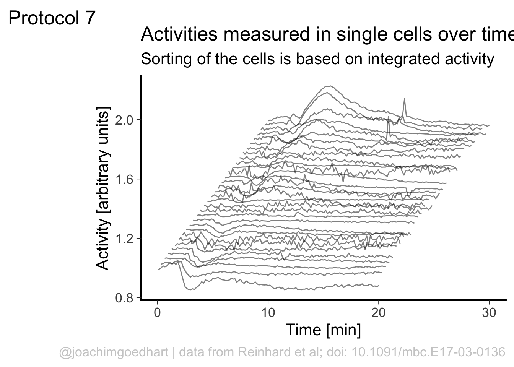
In my opinion, the scientific notation does not work well, so let’s try to use commas as a thousands separator:
p <- p + scale_x_discrete(position = "top") +
scale_color_viridis_c(label = scales::comma)Scale for 'x' is already present. Adding another scale for 'x', which will
replace the existing scale.Scale for 'colour' is already present. Adding another scale for 'colour',
which will replace the existing scale.pThis is a bit better, but the numbers need to be right aligned:
p <- p + theme(legend.text.align = 1)
p This looks better, now add the labels (and we skip the labels for the x- and y-axis):
This looks better, now add the labels (and we skip the labels for the x- and y-axis):
p <-
p + labs(
title = "Readings from a 96-wells plate",
subtitle = NULL,
x = NULL,
y = NULL,
caption = "\n@joachimgoedhart\nbased on data from Brandorff et al., DOI: 10.1101/2021.07.08.451595",
color= 'Intensity [a.u.]',
tag = "Protocol 8"
)
p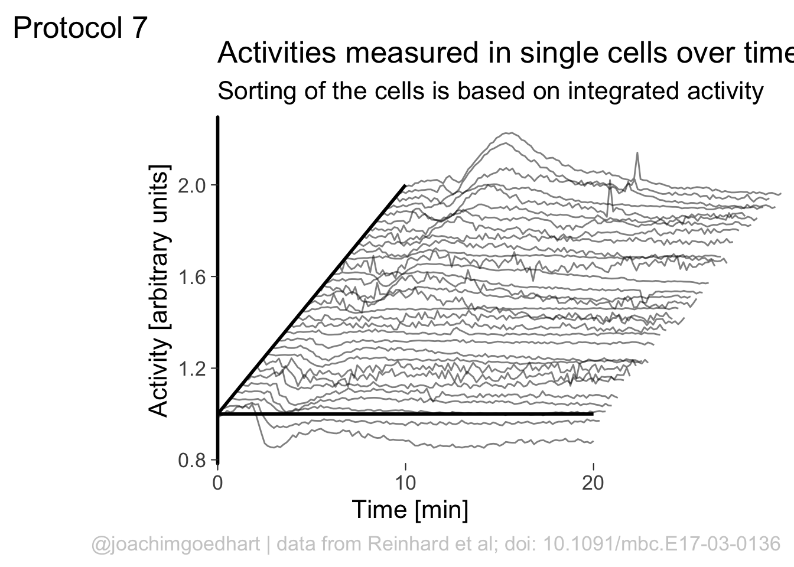
Set the theme and font size:
p <- p + theme_light(base_size = 14)Note that this overrides any previously defined modifications of the theme() function, such as the alignment of the legend labels. So we need to define this again.
p <- p + theme(legend.text.align = 1)We also adjust the theme settings for the other elements:
p <- p + theme(plot.caption = element_text(color = "grey80"),
plot.subtitle = element_text(color = "grey50", face = "italic"),
#Remove the grid
panel.grid.major = element_blank(),
panel.grid.minor = element_blank()
)Let’s look at the result:
pTo save the plot as a png file:
png(file=paste0("Protocol_08.png"), width = 3000, height = 2000, units = "px", res = 400)
p + coord_fixed()
dev.off()quartz_off_screen
2 4.9 Protocol 9 - A dose response curve with fit
In this protocol we visualize the data that was used to make a ‘dose reponse curve’. The data consists of some response that is measured at different concentrations of a compound that induces the effect (agonist). This is a typical experiment in pharmacology to understand the relation between the dose and the response. One of the relevant parameters is the ‘Half maximal effective concentration’ abbreviated as EC50. This is the concentration at which 50% of the maximal response is measured and we obtain this value by curve fitting. In this protocol we use data acquired from single cells from different biological replicates. We generate a ‘superplot’ (Lord et al., 2021) to distuinguish technical and sample replicates. More details about the experimental approach are published by Chavez-Abiega et al. (2022).
We start by loading the {tidyverse} package:
library(tidyverse)Read the data:
df_DRC <- read.csv("DRC_Histamine.csv", stringsAsFactors = TRUE)
head(df_DRC) X Unique_Unique_Object Experiment Aktnac ERKnac Condition Concen
1 1 12 20200122 P1 0.0558 -0.2106 PTx 0
2 2 15 20200122 P1 0.2458 -0.1424 PTx 0
3 3 16 20200122 P1 0.0412 -0.2493 PTx 0
4 4 22 20200122 P1 -0.1194 -0.1980 PTx 0
5 5 23 20200122 P1 0.1838 -0.1540 PTx 0
6 6 25 20200122 P1 0.3291 -0.7078 PTx 0The concentration is listed in the column ‘Concen’, the measured response is in the column ‘ERKnac’ and the column ‘Experiment’ identifies the replicates. Let’s rename the columns for easier identification of what they represent:
df_DRC <- df_DRC %>% rename(Concentration=Concen, Response=ERKnac)
head(df_DRC) X Unique_Unique_Object Experiment Aktnac Response Condition Concentration
1 1 12 20200122 P1 0.0558 -0.2106 PTx 0
2 2 15 20200122 P1 0.2458 -0.1424 PTx 0
3 3 16 20200122 P1 0.0412 -0.2493 PTx 0
4 4 22 20200122 P1 -0.1194 -0.1980 PTx 0
5 5 23 20200122 P1 0.1838 -0.1540 PTx 0
6 6 25 20200122 P1 0.3291 -0.7078 PTx 0To change the column ‘Experiment’ from text into a number that represents the replicate, we can convert it using as.numeric(). Since we need these numbers as qualitative data (a label), we convert the numbers to a factor with as.factor():
df_DRC <- df_DRC %>% mutate(Replicate=as.factor(as.integer(Experiment)))
head(df_DRC) X Unique_Unique_Object Experiment Aktnac Response Condition Concentration
1 1 12 20200122 P1 0.0558 -0.2106 PTx 0
2 2 15 20200122 P1 0.2458 -0.1424 PTx 0
3 3 16 20200122 P1 0.0412 -0.2493 PTx 0
4 4 22 20200122 P1 -0.1194 -0.1980 PTx 0
5 5 23 20200122 P1 0.1838 -0.1540 PTx 0
6 6 25 20200122 P1 0.3291 -0.7078 PTx 0
Replicate
1 1
2 1
3 1
4 1
5 1
6 1The range of concentrations at which the compound is examined spans a few orders of magnitude and therefore a log scale is used to display the concentrations. The minimal response is usually measured at a concentration of 0, but the logarithm of 0 is undefined. Therefore, plotting 0 on a logscale will give an error. The logarithm of 0 can be approached by minus infinity. Therefore, we convert the concentration of 0 to a low value, in this case 0.01:
df_DRC <- df_DRC %>%
mutate(Concentration = ifelse((Concentration == 0),
yes = 0.01,
no = Concentration)
)Next we take the ‘Response’ and calculate the average per concentration and for each biological replicate and store that information in a new dataframe:
df_summary <- df_DRC %>% group_by(Concentration, Replicate) %>% summarise(mean_Response=mean(Response))We can define a plot that shows the data with geom_jitter() and the average with a large dot with geom_point(). Each replicate has its own color and the data is plotted on a log scale with scale_x_log10():
p <- ggplot(data = df_DRC, aes(x = Concentration, y = Response)) +
geom_jitter(aes(x = Concentration, y = Response, color=Replicate), width=0.2, size=2, shape=16, alpha=0.2) +
geom_point(data=df_summary, aes(x = Concentration, y = mean_Response, fill=Replicate), size=8, shape=21, alpha=0.8) +
scale_x_log10()
pAdjusting the theme and the y-axis scale improves the plot:
p <- p +
ylim(-1,6) +
theme_light(16)
p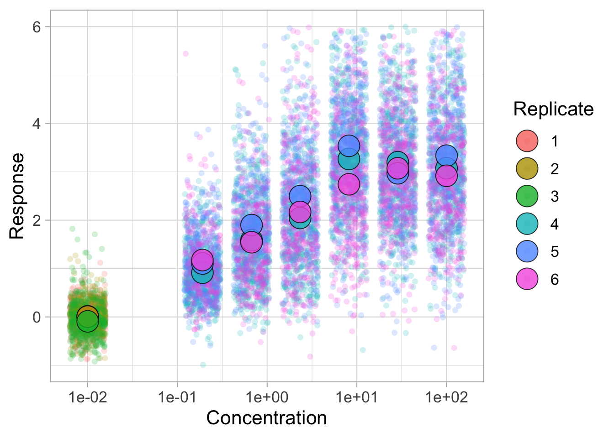
Add labels:
p <- p + labs(
title = "Responses of individual cells to Histamine",
x = "Histamine concentration [µM]",
y = "Response [arbitrary units]",
caption = "@joachimgoedhart\nbased on data from Chavez-Abiega et al., DOI: 10.1242/jcs.259685",
tag = "Protocol 9"
) +
theme(plot.caption = element_text(color = "grey80"))And to label the different replicates with a colorblind friendly palette, we define a set of colors that were proposed by Paul Tol: https://personal.sron.nl/~pault/
Tol_bright <- c('66CCEE', '#BBBBBB', '#CCBB44','#AA3377','#228833', '#4477AA')To use these colors we define manual color scales for both ‘fill’ (used for geom_point()) and ‘color’ (used for geom_jitter()):
p <- p + scale_fill_manual(values = Tol_bright) + scale_color_manual(values = Tol_bright)
pThe result is a dose response curve in which the replicates are clearly identified with colorblind friendly colors. The EC50 can be determined from fitting a curve. To this end, we use the function nls(), which needs an equation, the data and estimates of the values. It will perform a ‘nonlinear least squares’ optimization to find parameters for the equation that best fit with the data of ‘df_summary’. The parameters are ‘bot’, ‘top’, ‘EC50’ and ‘slope’:
fit <- nls(mean_Response ~ top+(bot-top)/(1+(Concentration/EC50)^slope),
data = df_summary,
start=list(bot=-2, top=8, EC50=1, slope=1))The result is stored in the object ‘fit’ and the parameters can be listed:
coef(fit) bot top EC50 slope
-0.1990747 3.2915665 0.4968078 0.7141988 To plot the fitted data, we use augment() function that is part of the {broom} package, which we need to load:
library(broom)
p + geom_line(data = augment(fit), aes(x=Concentration,y=.fitted), color="black", size=1)
Instead of geom_lin() for plotting the fit, we can also use geom_smooth():
p <- p + geom_smooth(data = augment(fit), aes(x=Concentration,y=.fitted), color="black", size=1)
p
An alternative way to do the curve fit is provided through the {drc} package. To demonstrate this, we load the package and add the curve fit to the data:
library(drc)
p + geom_smooth(data=df_summary, aes(x = Concentration, y = mean_Response), color='blue', method = drm, method.args = list(fct = L.4()), se = FALSE)
The {drc} package was used to fit the data in the paper by Chavez-Abiega et al. (2022). But the approach followed above with nls() is easier to adapt for data that requires other models for the fit.
Finally, we can save the plot:
png(file=paste0("Protocol_09.png"), width = 4000, height = 3000, units = "px", res = 400)
p
dev.off()quartz_off_screen
2 4.10 Protocol 10 - Plotting data that was harvestd with a Google form
The goal of this script is to read data that was generated by a Google form, transform it into a tidy format and plot the data. The form contains data that is submitted by students after doing a course on cell biology. The data that is submitted are length measurements on cells and in the end, we will plot these date.
First, we need the {tidyverse} package:
library(tidyverse)The data from the Google form are stored in a Google sheet that was published on the web as a CSV. This was achieved by ‘File > Share > Publish to web’ and selecting to ‘Publish’ as ‘Comma-separated values’.
After clicking on ‘Publish’ a link is generated that can be read as a csv, and any empty cells are converted to NA. Below is the outcommented code that loads the online google sheet. To make sure that this script works even when the google sheet is no longer active and to ensure a reproducible data visualization, I downloaded a snapshot (made on 21st of April, 2022) of the google sheet as a csv file and I’ll load that insetad:
# df_sheet <- read.csv("https://docs.google.com/spreadsheets/d/e/2PACX-1vSc-nI1-s_u-XkNXEn_u2l6wkBafxJMHQ_Cd3kStrnToh7kawqjQU3y2l_1riLigKRkIqlNOqPrgkdW/pub?output=csv", na.strings = "")
df_sheet <- read.csv("20220421_Resultaat-metingen.csv", na.strings = "")
head(df_sheet) Tijdstempel Groep
1 <NA> <NA>
2 <NA> <NA>
3 <NA> <NA>
4 <NA> <NA>
5 <NA> <NA>
6 01/03/2021 15:42:23 B
Resultaten.van.de.10.metingen..in.µm...van.de.celkleuring..methyleenblauw.
1 <NA>
2 <NA>
3 <NA>
4 <NA>
5 <NA>
6 64.6, 52.5, 79.4, 48.4, 66.0, 64.4, 69.8, 71.2, 50.7, 51.0
Resultaten.van.de.10.metingen..in.µm...van.de.kernkleuring..DAPI.
1 <NA>
2 <NA>
3 <NA>
4 <NA>
5 <NA>
6 11.8, 7.8, 7.0, 12.4, 12.7, 14.0, 11.9, 12.9, 11.7, 13.2There are a number of issues with this data. The first 5 rows are empty. I deleted the values in these rows, since they were dummy values from testing the form. Let’s remove rows without data:
df_sheet <- df_sheet %>% na.omit()The header names are still in the original language (Dutch) and the third and fourth header names with the relevant data are very long. Let’s change the names:
colnames(df_sheet) <- c("Timestamp", "Group", "Cell", "Nucleus")All the length measurements are distributed over two columns, let’s make it tidy and move it to one column:
df_tidy <-
pivot_longer(
df_sheet,
cols = -c("Timestamp", "Group"),
names_to = "Sample",
values_to = "Size"
)
head(df_tidy)# A tibble: 6 × 4
Timestamp Group Sample Size
<chr> <chr> <chr> <chr>
1 01/03/2021 15:42:23 B Cell 64.6, 52.5, 79.4, 48.4, 66.0, 64.4, 69.8, 7…
2 01/03/2021 15:42:23 B Nucleus 11.8, 7.8, 7.0, 12.4, 12.7, 14.0, 11.9, 12.…
3 01/03/2021 23:50:53 A Cell 57.7, 64.9, 44.8, 60.8, 46.8, 70.1, 67.8, 7…
4 01/03/2021 23:50:53 A Nucleus 9.6, 7.1, 8.7, 9.5, 8.1, 6, 8.3, 5.5, 7.8, …
5 02/03/2021 17:09:52 B Cell 14.839,17.578,9.054,16.218,14.724,12.410,14…
6 02/03/2021 17:09:52 B Nucleus 2.792,1.819,2.275,2.426,2.263,2.159,3.056,2…The column with measurements contains up to 10 length measurements. The values are separated by a comma and often a space. First, the space is removed and then each row is split into multiple rows, where each row has a single measurement. The comma is used to separate the values:
df_tidy <- df_tidy %>% mutate(Size = gsub(" ", "", Size)) %>% separate_rows(Size, sep=",") The ‘Size’ column values are converted to the class numeric. The advantage is that anything that is not a number will be converted to NA. These non-numeric data can stem from incorrectly enetered data. Examples of these incorrect data are numbers with units or with wrong separators.
df_tidy <- df_tidy %>% mutate(Size = as.numeric(Size))Finally, we can filter any values that fall outside the range of expected values (and this will also remove the cells with NA):
df_size <- df_tidy %>% filter(Size>0 & Size<1000)
head(df_size)# A tibble: 6 × 4
Timestamp Group Sample Size
<chr> <chr> <chr> <dbl>
1 01/03/2021 15:42:23 B Cell 64.6
2 01/03/2021 15:42:23 B Cell 52.5
3 01/03/2021 15:42:23 B Cell 79.4
4 01/03/2021 15:42:23 B Cell 48.4
5 01/03/2021 15:42:23 B Cell 66
6 01/03/2021 15:42:23 B Cell 64.4The dataframe is cleaned and tidy and so it is ready for visualization. The primary information is the distribution of size measurements for the measurements of cells and cell nuclei. This can be achieved by using geom_density(). Given the range of sizes, it makes sense to use a log10 scale for the x-axis:
ggplot(df_size, aes(x=Size, fill=Sample))+geom_density(alpha=.8) +
scale_x_log10()The geom_density() produces a smooth distribution of the data. I actually prefer to see the real data and that’s why we turn to geom_histogram. I also will split the data according to the sample and groups and this can be achieved with facet_grid(). Here, we use the labeller() function to combine the column name ‘Group’ with the the factor it presents, as this makes it easier to understand what is plotted:
ggplot(df_size, aes(x=Size, fill=Sample))+geom_histogram(alpha=.8) +
facet_grid(Sample~Group, labeller = labeller(Group=label_both)) +
scale_x_log10()
The use of color is redundant, since the data is split in Cell and Nucleus anyway, so we remove that. The difference between groups is not large and for the final data visualization I chose to combine the data for all the groups:
p <- ggplot(df_size, aes(x=Size)) +
geom_histogram(alpha=.5) +
facet_grid(~Sample) +
annotation_logticks(sides="b", outside = TRUE) +
scale_x_log10()
p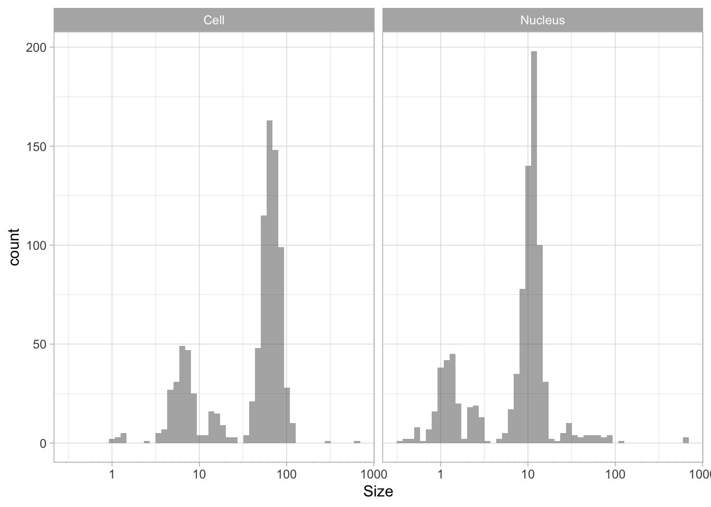
The data is presented in a nice way now, and we can improve the axis labels and add a title and caption:
p <-
p + labs(
title = "Distribution of size measurements",
subtitle = "Sizes of human cells and nuclei of cells",
x = "Size [µm] - log scale",
y = "Count",
caption = "@joachimgoedhart | data submitted by 4 groups of students",
tag = "Protocol 10"
)Optimizing the layout:
p <-
#Set text size
p + theme_light(base_size = 16) +
# Change the color and position of the caption
theme(
plot.caption = element_text(
color = "grey80",
hjust = 1
)
)
p
p <- p +
#Force the y-axis to start at zero
scale_y_continuous(expand = c(0, NA), limits = c(0,180)) +
#Apply a logarithmic scale to the x-axis and set the numbers for the scale
scale_x_log10(breaks = c(1,10,100)) +
#Remove minor gridlines
theme(panel.grid.minor = element_blank()) +
#Add ticks to the bottom, outside
annotation_logticks(sides="b", outside = TRUE) +
#Give a little more space to the log-ticks by adding margin to the top of the x-axis text
theme(axis.text.x = element_text(margin = margin(t=8))) +
#Needed to see the tcks outside the plot panel
coord_cartesian(clip = "off")
pTo save the plot as a PNG file:
png(file=paste0("Protocol_10.png"), width = 3000, height = 2000, units = "px", res = 400)
p
dev.off()quartz_off_screen
2 4.11 Protocol 11 - Plotting time data from a Google form
The goal of this script is to read data that was generated by a Google form and visualize the distribution of the hours at which the form was submitted. We need the tidyverse package:
library(tidyverse)The data from the Google form are stored in a sheet that was published on the web as a CSV. This was achieved by ‘File > Share > Publish to web’ and selecting to ‘Publish’ as ‘Comma-separated values’.
After clicking on ‘Publish’ a link is generated that can be read as a csv. Any empty cells are converted to NA. As explained in protocol 10, we will load a snapshot of the sheet (the code to read the actual sheet is outcommented here):
# df_sheet <- read.csv("https://docs.google.com/spreadsheets/d/e/2PACX-1vSc-nI1-s_u-XkNXEn_u2l6wkBafxJMHQ_Cd3kStrnToh7kawqjQU3y2l_1riLigKRkIqlNOqPrgkdW/pub?output=csv", na.strings = "")
df_sheet <- read.csv("20220421_Resultaat-metingen.csv", na.strings = "")
head(df_sheet) Tijdstempel Groep
1 <NA> <NA>
2 <NA> <NA>
3 <NA> <NA>
4 <NA> <NA>
5 <NA> <NA>
6 01/03/2021 15:42:23 B
Resultaten.van.de.10.metingen..in.µm...van.de.celkleuring..methyleenblauw.
1 <NA>
2 <NA>
3 <NA>
4 <NA>
5 <NA>
6 64.6, 52.5, 79.4, 48.4, 66.0, 64.4, 69.8, 71.2, 50.7, 51.0
Resultaten.van.de.10.metingen..in.µm...van.de.kernkleuring..DAPI.
1 <NA>
2 <NA>
3 <NA>
4 <NA>
5 <NA>
6 11.8, 7.8, 7.0, 12.4, 12.7, 14.0, 11.9, 12.9, 11.7, 13.2Here, we are only interested in the first column with the time data. So we select that column and replace the dutch column name by ‘Timestamp’:
df_sheet <- df_sheet %>% dplyr::select("Timestamp"=1) %>% na.omit()We can seperate the Timestamp column in date and time:
df_tidy <- df_sheet %>% separate('Timestamp', c("Date", "Time"), sep=" ")Correct handling of date and time data is quite challenging and a topic on its own. The code to format the ‘Date’ column as date (note that we need a capital Y as the year is presented in 4 digits) would be:
df_tidy %>%
mutate(Date=as.Date(Date, "%d/%m/%Y")) Date Time
6 2021-03-01 15:42:23
7 2021-03-01 23:50:53
8 2021-03-02 17:09:52
9 2021-03-03 09:30:43
10 2021-03-03 16:21:32
11 2021-03-03 21:00:23
12 2021-03-04 15:43:32
13 2021-03-04 17:32:39
14 2021-03-04 20:07:59
15 2021-03-04 21:49:10
16 2021-03-05 13:14:48
17 2021-03-05 13:48:10
18 2021-03-05 16:50:06
19 2021-03-08 12:10:52
20 2021-03-08 13:27:42
21 2021-03-08 14:08:33
22 2021-03-08 14:47:01
23 2021-03-08 23:12:51
24 2021-03-08 23:39:23
25 2021-03-09 01:16:29
26 2021-03-09 09:02:39
27 2021-03-09 09:26:30
28 2021-03-09 12:12:33
29 2021-03-09 12:49:12
30 2021-03-09 13:28:44
31 2021-03-09 15:46:57
32 2021-03-09 15:52:04
33 2021-03-09 16:12:23
34 2021-03-09 19:18:20
35 2021-03-09 19:26:21
36 2021-03-10 21:21:28
37 2021-03-11 15:06:23
38 2021-03-11 15:38:27
39 2021-03-11 18:06:19
40 2021-03-12 14:20:13
41 2021-03-13 15:14:33
42 2021-03-13 16:24:37
43 2021-03-14 00:33:25
44 2021-03-14 15:49:24
45 2021-03-14 16:50:51
46 2021-03-14 20:47:21
47 2021-03-15 09:23:13
48 2021-03-15 13:41:19
49 2021-03-15 14:16:38
50 2021-03-16 11:24:31
51 2021-03-17 14:23:08
52 2021-03-17 15:22:19
53 2021-03-17 17:38:21
54 2021-03-18 10:29:52
55 2021-03-18 13:48:29
56 2021-03-18 15:45:12
57 2021-03-18 19:36:41
58 2021-03-18 21:18:16
59 2021-03-19 03:10:24
60 2021-03-19 11:07:00
61 2021-03-19 14:07:47
62 2021-03-19 14:18:00
63 2021-03-19 17:36:16
64 2021-03-19 17:59:37
65 2021-03-19 19:48:21
66 2021-03-22 00:14:08
67 2022-01-17 12:25:54
68 2022-03-07 14:03:46
69 2022-03-07 20:32:27
70 2022-03-08 23:09:31
71 2022-03-09 13:05:59
72 2022-03-10 12:07:58
73 2022-03-10 18:28:07
74 2022-03-14 11:46:06
75 2022-03-14 13:11:28
76 2022-03-14 15:30:03
77 2022-03-15 10:50:47
78 2022-03-15 12:36:07
79 2022-03-15 21:45:04
80 2022-03-15 22:35:57
81 2022-03-15 23:12:24
82 2022-03-15 23:38:30
83 2022-03-17 15:03:44
84 2022-03-18 11:31:42
85 2022-03-22 09:53:12
86 2022-03-22 09:58:42
87 2022-03-22 22:35:45
88 2022-03-23 12:36:16
89 2022-03-24 12:17:26
90 2022-03-24 13:19:50
91 2022-03-24 13:29:16
92 2022-03-24 18:32:38
93 2022-03-25 11:45:33
94 2022-03-25 15:20:45
95 2022-03-25 22:08:41
96 2022-03-26 15:04:36
97 2022-03-26 21:09:15
98 2022-03-27 15:33:07
99 2022-03-27 20:46:09
100 2022-03-27 23:53:28
101 2022-03-27 23:57:13Here, we avoid the Date format and use the individual numbers. The ‘Date’ column is seperated into three columns for year, month and day. The ‘Time’ column can be split into hour, minute and second:
df_tidy <- df_tidy %>%
separate('Date', c("day", "month", "year"), sep="/", convert = TRUE) %>%
separate('Time', c("hour", "min", "sec"), sep=":", convert = TRUE)
head(df_tidy) day month year hour min sec
6 1 3 2021 15 42 23
7 1 3 2021 23 50 53
8 2 3 2021 17 9 52
9 3 3 2021 9 30 43
10 3 3 2021 16 21 32
11 3 3 2021 21 0 23Note that we use convert = TRUE to ensure that the data is treated as numbers (not as characters). We can use the data to check at what time the data was submitted:
ggplot(df_tidy, aes(x=hour))+geom_histogram(alpha=.8)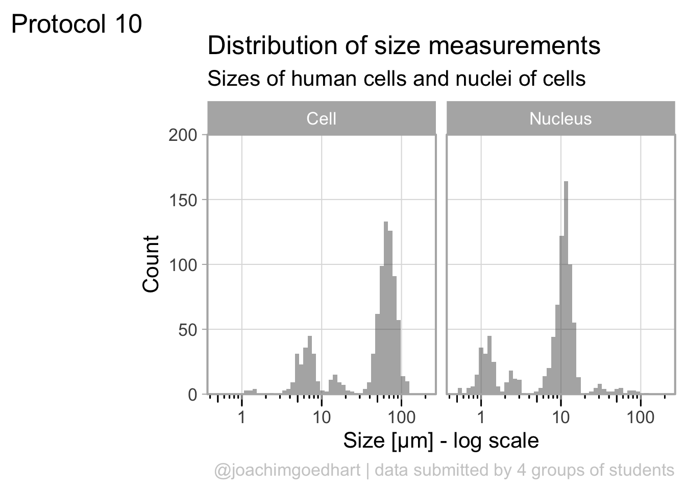
The default number of ‘bins’ is 30, but it makes more sense to use 24 here as there are 24 hours in a day:
ggplot(df_tidy, aes(x=hour))+geom_histogram(bins = 24, alpha=.8) Since ‘hour’ is a number that cycles, with 0 followed by 23, it is nice to connect the data from 23 with 0 and we can do that with
Since ‘hour’ is a number that cycles, with 0 followed by 23, it is nice to connect the data from 23 with 0 and we can do that with coord_polar():
ggplot(df_tidy, aes(x=hour)) +
geom_histogram(bins = 24, alpha=.8) +
coord_polar() +
scale_x_continuous(breaks=seq(0, 24, by=2))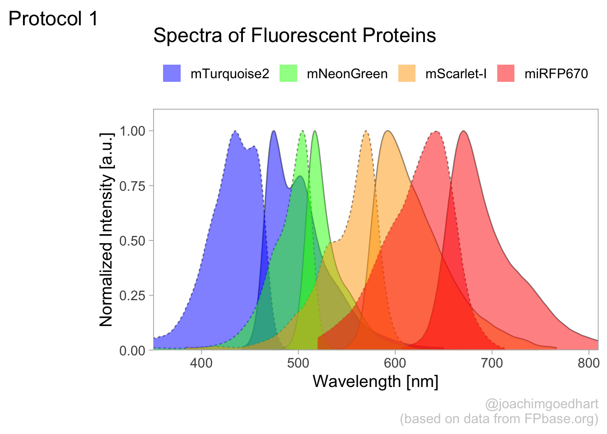
To center the plot at 0, we need to rotate it by -7.5 degrees (1 hour equal 15 degrees). We can use the start option within coord_polar(), but it only accepts ‘radians’. To convert degrees to radians the value is multiplied by pi/180:
ggplot(df_tidy, aes(x=hour)) +
geom_histogram(bins = 24, alpha=.8) +
coord_polar(start = (-7.5*pi/180)) +
scale_x_continuous(breaks=seq(0, 24, by=3)) The plot can be rotated to center it around 15h as it reflects the middle of the afternoon, when most activity takes place. To achieve this, we need to shift the start another 15*15 degrees:
The plot can be rotated to center it around 15h as it reflects the middle of the afternoon, when most activity takes place. To achieve this, we need to shift the start another 15*15 degrees:
p <- ggplot(df_tidy, aes(x=hour)) +
geom_histogram(bins = 24, alpha=.8, color='black') +
coord_polar(start = (-7.5 - 15*15)*pi/180) +
scale_x_continuous(breaks=seq(0, 24, by=3))
p This looks good, let’s first improve on the layout by changing the theme. I do not like the grey background, so any theme with a white background is an improvement, for instance
This looks good, let’s first improve on the layout by changing the theme. I do not like the grey background, so any theme with a white background is an improvement, for instance theme_minimal():
p + theme_minimal()
I do not like the labels that show the count. Since it is clear that the length of the bar indicates an amount and since the absolute amount is not so interesting, these labels can be removed. The labels for the hours are helpful and their sice needs to be increased. Finally, I do not like the grid running through the numbers. I did not find a way in the theme setting to get rid of this, so we define the grid ourselves by using repetitive horizontal and vertical lines:
p <- p +
geom_hline(yintercept = c(2,4,6,8), colour = "grey90", size = 0.5) +
geom_vline(xintercept = seq(0, 21, by=3), colour = "grey90", size = 0.5) +
theme_minimal(base_size = 16) +
theme(panel.grid.major.x = element_blank(),
panel.grid.major.y = element_blank(),
panel.grid.minor.x = element_blank(),
panel.grid.minor.y = element_blank(),
axis.text.y = element_blank()
)
pThe grid looks good, but the bars have to be on top of this layer, so we redefine the plot in the correct order:
p <- ggplot(df_tidy, aes(x=hour)) +
geom_hline(yintercept = c(2,4,6,8), colour = "grey90", size = 0.5) +
geom_vline(xintercept = seq(0, 21, by=3), colour = "grey90", size = 0.5) +
geom_histogram(bins = 24, alpha=.8, color='black') +
coord_polar(start = (-7.5 - 15*15)*pi/180) +
scale_x_continuous(breaks=seq(0, 24, by=3)) +
theme_minimal(base_size = 16) +
theme(panel.grid.major.x = element_blank(),
panel.grid.major.y = element_blank(),
panel.grid.minor.x = element_blank(),
panel.grid.minor.y = element_blank(),
axis.text.y = element_blank()
) +
labs(
title = "Counting the hours...",
subtitle = "that a Google form was submitted",
x = "",
y = "",
caption = "@joachimgoedhart | data submitted by students",
tag = "Protocol 11"
) +
theme(plot.caption = element_text(color = "grey80", hjust = 1))
p
A centered title and subtitle looks nice on this plot:
p <- p + theme(
plot.title = element_text(hjust = 0.5),
plot.subtitle = element_text(hjust = 0.5)
)
p
To save the plot as a PNG file:
png(file=paste0("Protocol_11.png"), width = 4000, height = 3000, units = "px", res = 400)
p
dev.off()quartz_off_screen
2